Bayesian Tobit Regression
Bayesian tobit regression estimates a linear regression model with a censored dependent variable using a Gibbs sampler. The dependent variable may be censored from below and/or from above. For other linear regression models with fully observed dependent variables, see Bayesian regression, maximum likelihood normal regression, or least squares.
With reference classes:
z5 <- zprobitbayes$new()
z5$zelig((Y ~ X1 + X2, below = 0, above = Inf, data = mydata)
z5$setx()
z5$sim()
With the Zelig 4 compatibility wrappers:
z.out <- zelig(Y ~ X1 + X2, below = 0, above = Inf,
model = "tobit.bayes", data = mydata)
x.out <- setx(z.out)
s.out <- sim(z.out, x = x.out)
zelig() accepts the following arguments to specify how the dependent variable is censored.
Use the following arguments to monitor the convergence of the Markov chain:
 ) is printed to the screen.
) is printed to the screen.Use the following parameters to specify the model’s priors:
Zelig users may wish to refer to help(MCMCtobit) for more information.
Attaching the sample dataset:
data(tobin)
Estimating linear regression using tobit.bayes:
z.out <- zelig(durable ~ age + quant, model = "tobit.bayes",
data = tobin, verbose = FALSE)
## How to cite this model in Zelig:
## Ben Goodrich, Ying Lu. 2013.
## tobitbayes: Bayesian Tobit Regression for a Censored Dependent Variable
## in Kosuke Imai, Gary King, and Olivia Lau, "Zelig: Everyone's Statistical Software,"
## http://zeligproject.org/
Checking for convergence before summarizing the estimates:
geweke.diag(z.out$coefficients)
heidel.diag(z.out$coefficients)
raftery.diag(z.out$coefficients)
summary(z.out)
Setting values for the explanatory variables to their sample averages:
x.out <- setx(z.out)
Simulating quantities of interest from the posterior distribution given x.out.
s.out1 <- sim(z.out, x = x.out)
summary(s.out1)
Set explanatory variables to their default(mean/mode) values, with high (80th percentile) and low (20th percentile) liquidity ratio (quant):
x.high <- setx(z.out, quant = quantile(tobin$quant, prob = 0.8))
x.low <- setx(z.out, quant = quantile(tobin$quant, prob = 0.2))
Estimating the first difference for the effect of high versus low liquidity ratio on duration( durable):
s.out2 <- sim(z.out, x = x.high, x1 = x.low)
summary(s.out2)
Let  be the dependent variable which is not directly
observed. Instead, we observe
be the dependent variable which is not directly
observed. Instead, we observe  which is defined as following:
which is defined as following:
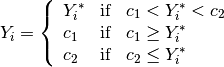
where 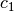 is the lower bound below which is
censored, and 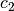 is the upper bound above which
is censored.
The stochastic component is given by
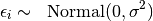
where 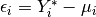.
The systematic component is given by
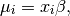
where  is the vector of
is the vector of  explanatory variables
for observation
explanatory variables
for observation  and
and  is the vector of
coefficients.
is the vector of
coefficients.
The semi-conjugate priors for and  are given by
are given by
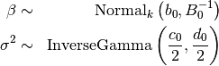
where  is the vector of means for the
explanatory variables,
is the vector of means for the
explanatory variables,  is the
is the  precision matrix (the inverse of a variance-covariance matrix), and
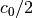 and 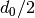 are the shape and scale parameters
for
precision matrix (the inverse of a variance-covariance matrix), and
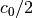 and 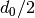 are the shape and scale parameters
for  . Note that and
are assumed a priori independent.
. Note that and
are assumed a priori independent.
The expected values (qi$ev) for the tobit regression model is calculated as following. Let
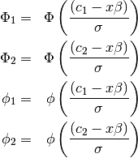
where  is the (cumulative) Normal density function
and 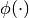 is the Normal probability density function of
the standard normal distribution. Then the expected values are
is the (cumulative) Normal density function
and 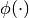 is the Normal probability density function of
the standard normal distribution. Then the expected values are
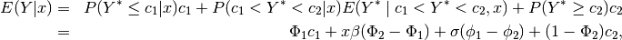
The first difference (qi$fd) for the tobit regression model is defined as
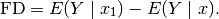
In conditional prediction models, the average expected treatment effect (qi$att.ev) for the treatment group is
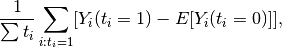
where  is a binary explanatory variable defining the
treatment (
is a binary explanatory variable defining the
treatment ( ) and control (
) and control ( ) groups.
) groups.
The output of each Zelig command contains useful information which you may view. For example, if you run:
z.out <- zelig(y ~ x, model = "tobit.bayes", data)
then you may examine the available information in z.out by using names(z.out), see the draws from the posterior distribution of the coefficients by using z.out$coefficients, and view a default summary of information through summary(z.out). Other elements available through the $ operator are listed below.
columns contain the
posterior draws of the coefficients , and the last
column contains the posterior draws of the variance
.Bayesian tobit regression is part of the MCMCpack library by Andrew D. Martin and Kevin M. Quinn . The convergence diagnostics are part of the CODA library by Martyn Plummer, Nicky Best, Kate Cowles, and Karen Vines.